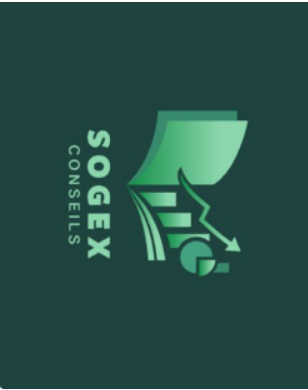
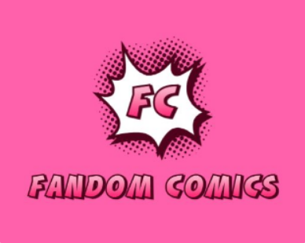

Situations professionnelles

Projet 1 — Sogex Conseils
Développement d'une application web pour un cabinet de conseil. Gestion des données clients et mise en place d'une interface d'administration.[cite: 7]

Projet 2 — Fandom
Développement d'un site web pour une communauté de fans. Une page de référentiel sur les personnages et l'univers de marvels et dc comics.[cite: 7]
2e année — à venir
2e année — à venir
Projet 2 — Fandom
1. Contexte & besoin
Ce projet a été réalisé dans le cadre de ma formation afin d'apprendre les bases du développement web. J'ai choisi de créer un site consacré à l'univers Marvel et DC Comics, car c'est un sujet qui me passionne. L'objectif était de proposer une présentation simple des personnages et de leurs univers.[cite: 7]
2. Environnement technologique
Langages : HTML, CSS. Outils : Visual Studio Code, Figma. Système : Windows.[cite: 7]
3. Réalisations détaillées
Recherche du sujet, Conception de maquettes sur Figma, Développement des pages HTML et styles CSS, Organisation du contenu et Tests d'affichage.[cite: 7]
4. Problèmes rencontrés & solutions
La principale difficulté a été de trouver une idée pertinente, et j'ai résolu mes soucis CSS grâce à la pratique et aux recherches.[cite: 7]
5. Bilan & conclusion
Ce projet m'a permis d'apprendre les bases du HTML et du CSS et de comprendre la structure d'un site.[cite: 7]